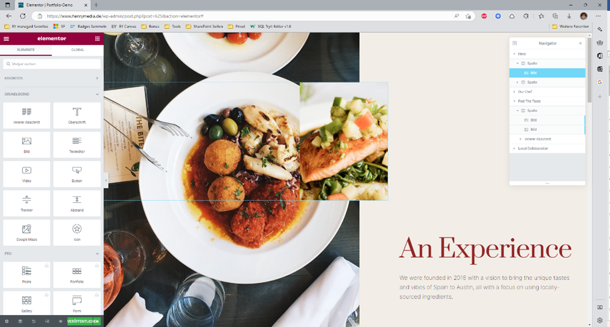
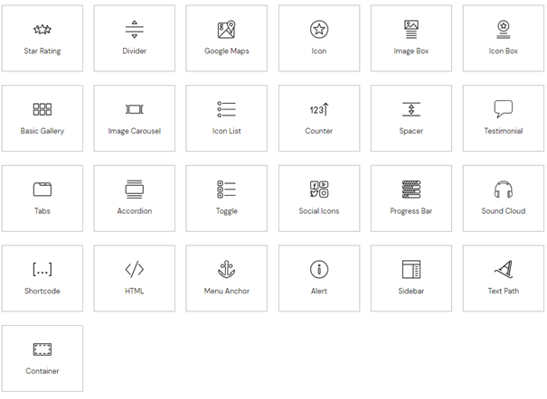
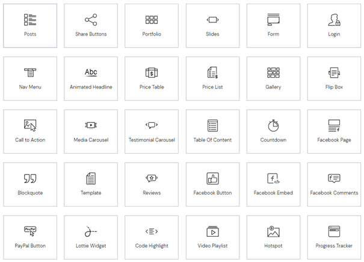
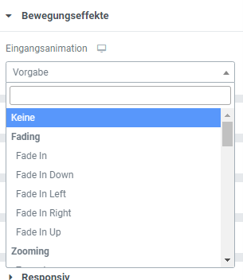
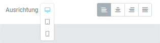

Vertiefungsthema
–
Websites erstellen ohne Code
Viele Leute denken, wenn sie eine Webseite sehen, dass es nötig ist
mehrere Programmiersprachen zu können. Glücklicherweise ist das nicht
nötig – man muss ja auch nicht programmieren können, wenn man
ein Word Dokument erstellen möchte. Um die Websiteerstellung
zugänglich für alle Leute zu machen, gibt es moderne Lösungen, die
eine Schnittstelle zwischen einem Website-Entwickler und dem zugrunde
liegendem Code bilden. Sie ermöglicht es einer Website Funktionen
hinzuzufügen ohne, dass eigenständig etwas programmiert werden muss.
Die Idee eine Website zu erstellen ohne zu programmieren hat Ihren
Ursprung mit der Erstellung von WordPress, einem Content Management
System (CMS). WordPress ist eine Low-code Plattform, kann aber auch
als No-code-Plattform genutzt werden.
Obwohl das ein erster
großer Schritt war, ist die Vielfalt und die Benutzerfreundlichkeit in
WordPress eingeschränkt. Viele Menüs sind verschachtelt, es müssen
WordPress Themes benutzt werden, die teilweise, aber nicht vollkommen
frei konfigurierbar sind. Außerdem ist WordPress nicht für jede Art
von Website gemacht. Kurz gesagt, WordPress bietet eine sehr gute
Basis, ist aber nicht ausreichend was die Vielfältigkeit und
Benutzerfreundlichkeit bei den Designmöglichkeiten betrifft. Um das zu
vereinfachen, gibt es komplexere Page Builder, wie Elementor.
Was ist Elementor?
Page Builder sind eine Art „Baukasten“ für Websites. Mit ihnen kann das Layout einer Seite bestimmt und nach Belieben angepasst werden. Texte, Bilder und andere Elemente können frei nach Belieben angeordnet werden. Das Besondere ist dabei, dass dies komplett per drag-and-drop passiert. Man kann in verschiedene Bereiche so genannte Widgets ziehen. Widgets sind die kleinsten Elemente, wie z.B. buttons, progress bars oder bilder. Darum herum sind Spalten, die einen Bereich vertikal in Abschnitte teilen und diese Bereiche sind die größten Elemente, sie Teilen eine Seite in horizontale Abschnitte. Und so kann man jegliches Layout erstellen, ganz egal welches Theme in WordPress aktuell ausgewählt ist. Außerdem benötigt man beim Arbeiten mit Elementor keine HTML/CSS/JavaScript/PHP Fähigkeiten, denn man kann alles über das Benutzerinterface steuern. Dabei ist schon ein Modus eingebaut, der einem ermöglicht responsive Websites zu erstellen.
Was kann ich mit Elementor machen?
Bei Elementor dreht sich alles rund ums Thema Frontend Design. Wie soll meine Website aussehen, welche Elemente sollen auf ihr zu sehen sein und was für Funktionen sollen die jeweiligen Elemente mitbringen. Mit Elementor kann man bspw. Landing pages, Blogs, Onlineshops (mithilfe einer Erweiterung, zu der wir gleich kommen), Business Websites und Portfolios erstellen. Dazu kann man alle Elemente, die man häufig braucht, benutzen. Man kann Überschriften, Bilder, Videos, Buttons, Icons, Akkordeons und viele Standardelemente mehr per drag & drop einfügen. Damit kann man dann die Seite oder eigene Templates für header, footer, popups oder anderes gestalten. Diese lassen sich immer wieder verwenden.
Standardelemente der Kostenlosen Version
Standardelemente der Pro Version
Es gibt außerdem eine Vielzahl an Animationen, die man auswählen kann, um seine Inhalte dynamischer zu gestalten. In der kostenlosen Version gibt es nur Bildeingangsanimationen in der Pro-Version gibt es eine Vielzahl an Bewegungseffekten.
Außerdem wird die Seite automatisch responsive designt. Sollte das automatisch responsive design nicht funktionieren hat man die Möglichkeit verschiedene Parameter für verschiedene Gerätetypen auszuwählen oder einzelner Elemente komplett nur für eine mobile Seite zu aktivieren und andere Elemente nur für eine Desktop Seite zu deaktivieren.
WooCommerce
Es gibt in Elementor, wie in Wordpress, ebenfalls Plugins. Eins der wichtigsten ist WooCommerce. Damit lassen sich ähnlich einfach Onlinestores aufsetzen. Ein gutes Beispiel dafür ist die Website wearelittlegiants. WooCommerce unterstützt folgende Punkte:
- Produktmanagement: Es ist möglich verschiedene Produkte und Produktarten hinzuzufügen und zu managen
- Zahlungsverarbeitung: WooCommerce hat alle gängigen Zahlungsmittel und -plattformen implementiert, so dass man alle Zahlungen von Kunden annehmen kann
- Versandoptionen: Man kann verschiedene Optionen auswählen, wie Flatrate-Versand oder kostenloser Versand sowie verschiedene Steuersätze
- Coupons und Discounts: Man kann eigene Coupon und Rabatt codes erstellen und managen
- Bewertungen: Kunden können Produktbewertungen erstellen, damit das Vertrauen erhöht wird
- Inventarmanagement: WooCommerce trackt das Inventar und benachrichtigt sobald ein Artikel eine geringe Verfügbarkeit hat
Was kann Elementor nicht?
Wo wir nun die Vorteile gesehen haben, kommen wir aber auch schnell zu
den Limitationen von Elementor. Klar, dass ein Low-/No-Code
Environment nur eingeschränkte Möglichkeiten hat und selbst wenn es
von außen hoch personalisierbar wirkt, nicht jeden einzelnen Wunsch
erfüllen kann.
So ist Elementor nicht geeignet, um das Backend zu konfigurieren. Egal
ob server-side-rendering, serverless architectures oder databases
nichts davon kann man mithilfe von Elementor konfigurieren. Elementor
verändert zwar das Backend und erstellt Datenbanken, die es braucht,
aber man kann es nicht manuell durch Elementor konfigurieren. Es ist
möglich mithilfe Elementors Development Dokumentation eigene Plugins,
Elemente zu erstellen oder den Editor anzupassen. Allerdings ist man,
wenn man das Backend manuell Anpassen muss, häufig an dem Punkt
angekommen, dass es sich mehr lohnen würde die Website komplett
programmieren zu lassen.
Weitere Nachteile
Natürlich gibt es auch einige Nachteile, wenn man Elementor benutzt. Die meisten dieser erschließen sich aber aus dem einfachen Fakt, dass es sich bei Elementor um einen Page-builder handelt:
Komplexe Websites einfach erstellen
Das Konzept von Elementor ist ein Paradoxon für sich. Zwar ist es mit Elementor möglich einfach Websites zu erstellen, aber eine komplexe Website lässt sich eben nicht „einfach“ erstellen. Die Fähigkeiten eines Webdesigners sind nicht von jetzt auf gleich gelernt. Nutzerführung, Gestaltungsgrundsätze und Usability sind nicht per Pagebuilder erreichbar. Das sind Fähigkeiten, die sich aus Jahrelanger Erfahrung ergeben. So lassen sich einfache Seiten selbst erstellen, aber für eine ansprechende Seite braucht es am Ende des Tages doch jemanden mit Erfahrung.
Erhöhte Ladezeiten
Elementor ist zwar sehr stark optimiert, aber einen Pagespeed score von 100 zu erreichen ist nur mit Elementor nicht möglich. Die vielen Funktionen von Elementor müssen auch im Code untergebracht werden. So kommt es vor, dass eine einzelne Überschrift vier geschachtelte Container außen rum besitzt. Um dem zu begegnen, gibt es Optimierungsplugin innerhalb von WordPress, die den verwendeten CSS oder JavaScript Code minimieren. Dennoch ist es möglich mit Elementor im oberen 90er Bereich beim Pagespeed score zu landen – aber eben nicht ganz so einfach wie das Erstellen einer Website.
Lock-in-Effekt
Pagebuilder binden ihre Nutzer in jedem Fall an das eigene System. Wenn man Elementor nutzt, ist man gefangen. Ein Wechsel ist nur durch das händische Übertragen des Codes möglich. Die Entwickler von Elementor hinterlassen immerhin weitestgehend sauberen Code.
Keine Lebenslange Lizenz
Es gibt keine Lebenslangen Lizenzen von Elementor. Man muss also pro Jahr zahlen, ansonsten verzichtet man auf wichtige Updates oder Funktionen.
Eigene Meinung
Ich denke, dass Elementor der beste Pagebuilder auf dem Markt ist. Wenn man volle Kontrolle über das Aussehen der eigenen Website haben will, aber sich nicht mit dem Code beschäftigen möchte dann ist Elementor das Plugin der Wahl. Mit Elementor ist die Gestaltung einer Website einfach und intuitiv, aber trotzdem so komplex, dass man schnell einen Experten braucht. Dank der Templates bietet WordPress einen schnellen Workflow und kann mit seinem hohen Funktionsumfang viele andere Plugins ersetzen. Ich persönlich nutze Elementor auf all meinen WordPress Seiten und setze fast ausschließlich alle meine Kundenprojekte über Elementor um.
Zukunftsaussicht
Der E-Commerce Markt wächst seit einigen Jahren und es sieht bisher,
bei einem prognostiziertem Wachstum von 11%/Jahr, nicht nach einem
Ende aus (Quelle). Dieser Markt könnte ein weiterer Boost für das Wachstum von
Elementor sein. Außerdem kann ich mir sehr gut vorstellen, dass
Elementor auf kurz oder lang eine stand-alone Version entwickelt, die
mit einem cloud web hosting Partner arbeitet. Denn auch WordPress ist
eine Limitation an sich, eine stand-alone Version öffnet neue
Märkte.
Außerdem könnte Elementor seine jetzige Nutzerbasis von 9 Millionen
Aktiven Websites durch das verpartnern mit anderen Website-Buildern,
wie WIX, SquareSpace oder ähnlichen vergrößern. Dort könnten sie eine
ähnliche leicht angepasst Version von Elementor einsetzen.